Основы благополучия твоей собаки
Благополучие собаки в повседневной жизни складывается из того, как организованы домашнее пространство и бытовые процедуры, какая амуниция используется на прогулке и насколько понятным и бережным остается взаимодействие с человеком. Важную роль играют и ритуалы: предсказуемая последовательность действий помогают собаке понимать, что будет дальше, а значит делают совместную жизнь спокойнее.
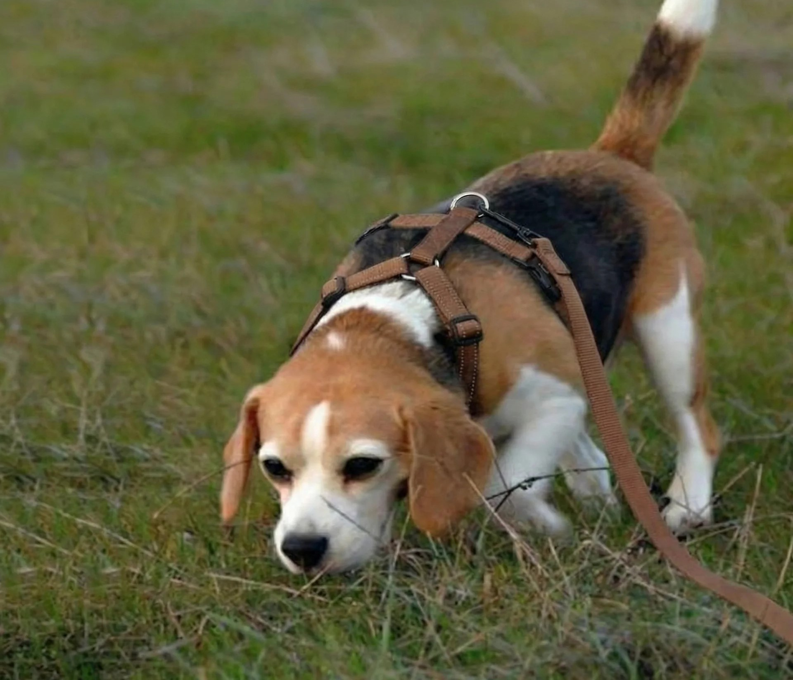
Организация домашнего пространства
При организации домашнего пространства важно учитывать потребности и индивидуальные особенности вашей собаки. Иметь возможность выбора для собаки очень важно: спать где комфортно, что-то изучать, уединиться или, наоборот, иметь возможность провести с вами время.
Скользкий пол, особенно когда собака прыгает с какого-то возвышения, повышают риск травм и развития остеоартрита, поэтому основные места пребывания собаки стоит сделать нескользкими - с помощью ковров или специальных покрытий.
Место для еды
Для щенков, молодых и взрослых здоровых собак миски должны стоять на полу, поскольку именно такое положение физиологично для собак: при нем пищевод распрямляется, а не изгибается, как при кормлении с высокой подставки. При этом у собак с заболеваниями опорно-двигательного аппарата высота миски подбирается иначе, чтобы не усиливать боль при наклоне головы вниз (как правило размещается на уровне плечевых суставов).
Важно следить за чистотой посуды и выбирать безопасные материалы (например, нержавеющая сталь с нескользящим дном), а также предусмотреть нескользящее покрытие под лапами в зоне кормления. Если в доме живет несколько собак, их миски должны стоять на расстоянии друг от друга.
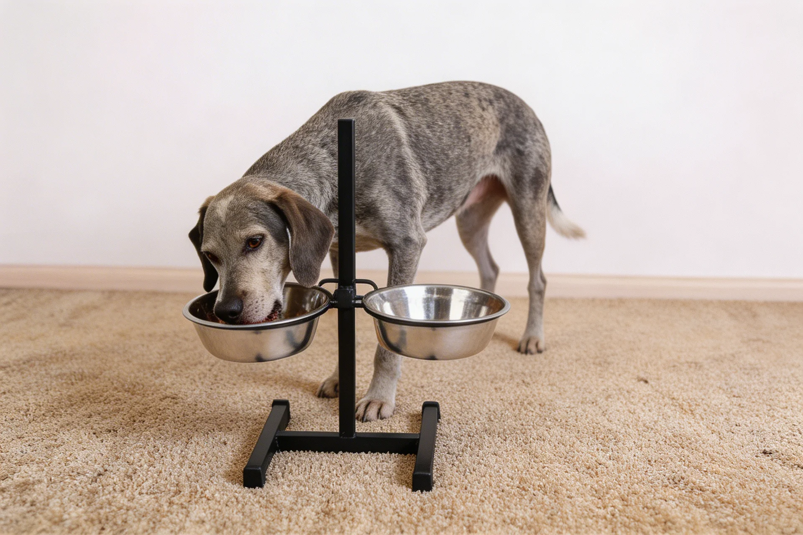
Место для отдыха
Важно, чтобы у собаки было несколько вариантов мест отдыха с разной фактурой и температурой: более мягкие и более жёсткие поверхности, возможность спать на возвышении или охладиться на полу.
Обязательно должно быть уединенное место, где собаке не проводят никаких процедур, где она может расслабиться, где не слышно шума бытовых приборов или пугающих стимулов (звука грозы или салютов) и есть возможность включить успокаивающую музыку.
Для пожилых и собак с заболеваниями опорно-двигательного аппарата особенно значимы ортопедические лежанки с эффектом памяти, которые помогают разгрузить суставы и повышают комфорт отдыха (наличие бортиков/подушечки приветствуется!).
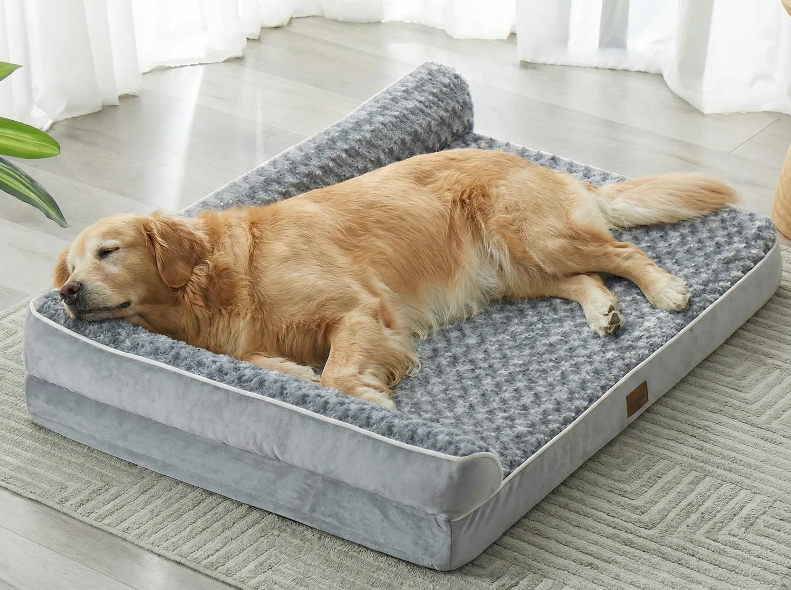
Разделение пространства
Ворота безопасности могут помочь в тех случаях, когда, например, в семье есть маленький ребенок, который может проявлять слишком много внимания к собаке. И для того, чтобы собака могла быть с одной стороны, в одном пространстве со всеми, а с другой стороны собака и ребенок могли не заимодействовать до определенного момента - идеально подойдут ворота безопасности. Или, например, мы можем их использовать если собака испытывает дискомфорт когда приходят гости.
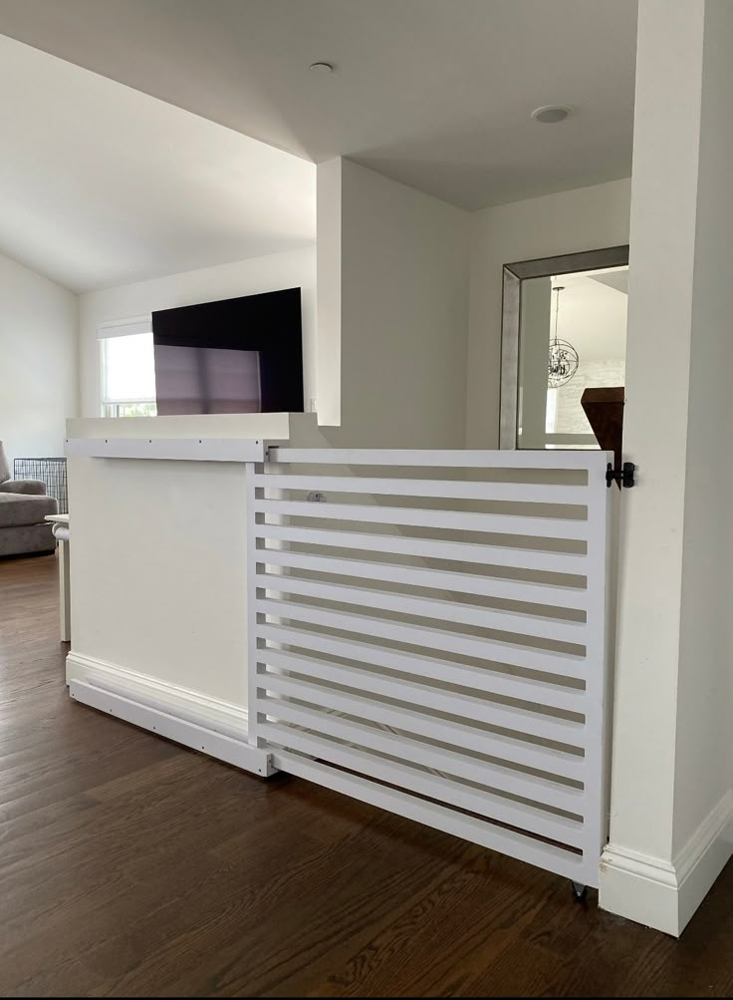
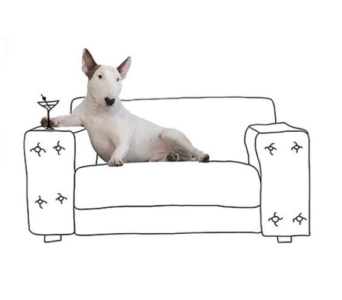
Чек-лист необходимых вещей для вашей собаки:
Миски, игрушки, лежанки с разными фактурами, безопасный пандус к дивану или кровати, средства ухода (лосьон для ушей, шампунь, когтерез, машинка, защита лап, средства от паразитов).
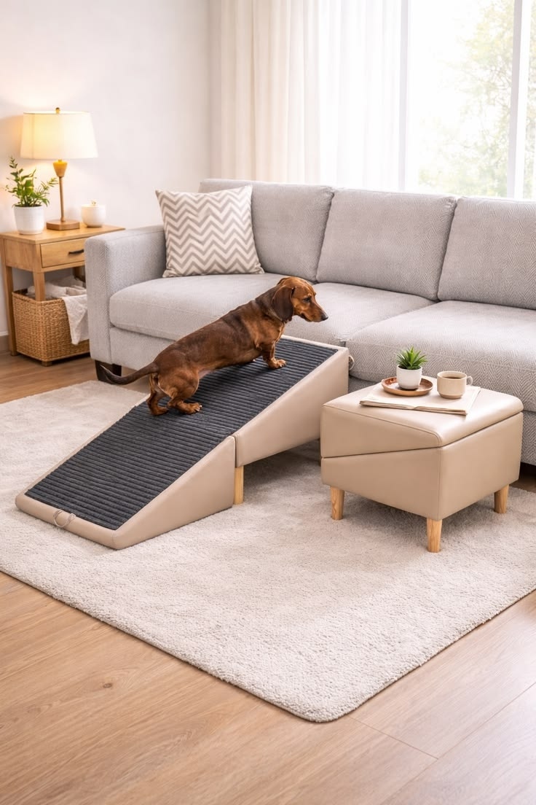
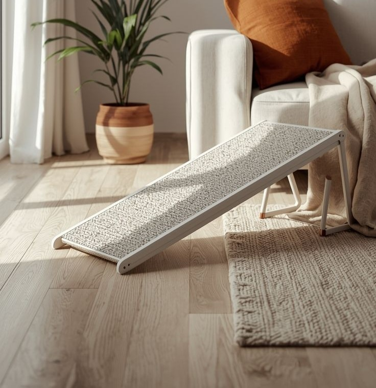
Бытовые процедуры и домашний уход
Бытовые процедуры превращаются не в источник стресса, а в регулярный социальный контакт с собакой через предсказуемые действия и ритуалы, уважение к её сигналам и бережные прикосновения
Обязательный минимум: спокойная пальпация всего тела, осмотр и чистка ушей, глаз, зубов, стрижка когтей, уход за шерстью на лапах (в т.ч. стрижка шерсти между подушечками).
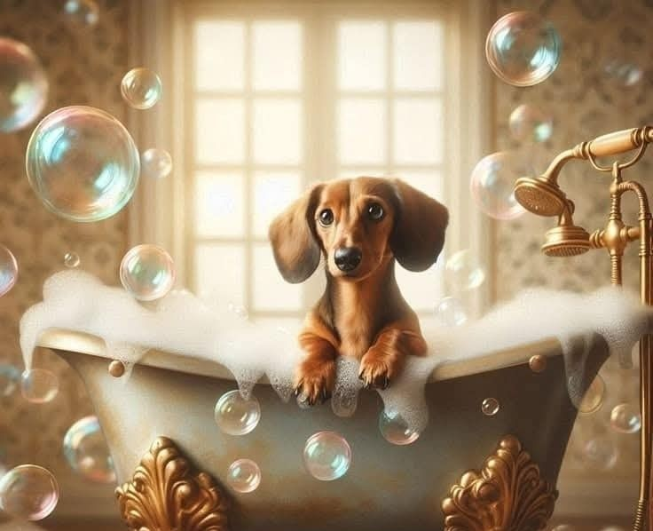
Гигиенические процедуры
К гигиеническим процедурам собаку мы приучаем постепенно: отдельно даем привыкнуть к самому помещению, к звуку воды, к душу, затем постепенно знакомим с водой.
Делаем мы это поэтапно, если собака испытывает сильный дискомфорт мы не торопим ее и даем время привыкнуть к процедуре. Важно использовать слова, которые дадут собаке возможность понять, что сейчас планируется и после всегда давать ей совместный контакт и поощрить лакомствами.
В ванне и ванной комнате должны быть нескользкие коврики!
Моем собаку только ветеринарными шампунями, имеющими специальный ph. В лечебных шампунях может не быть моющего компонента, поэтому если собака грязная, перед нанесением лечебного шампуня ее нужно помыть обычным. Лечебные шампуни всегда должны смываться, так как они токсичны.
Груминг в салоне выбирать таким образом, чтобы собака могла менять позу, получать паузы и не оказывалась в фиксации. Никогда не делайте вашей собаке процедуру "экспресс-линька".
Зубки собаке чистить дома обязательно. Частота - зависит от каждой конкретной собаки (может варьироваться от раза в день до раза в неделю). Можно чистить без щетки - бинтом, но бессмысленно чистить зубы силиконовыми напаличниками или салфетками без абразивной структуры. Без пасты чистить зубы собаке можно, если с пастой - то строго ветеринарной.
Оленьи рога собакам не даем - они сильно травмируют зубы и ЖКТ (тем более зубы у щенков)
В ветеринарной клинике чистим зубы собаке скалером только под наркозом!
У собаки всегда должна быть возможность сходить в туалет дома и не терпеть (мочевой пузырь собаки становится полным спустя 6 часов после опорожнения). Собака не обязательно будет ходить в туалет дома, но возможность не терпеть когда она очень хочет в туалет - у нее быть должна.
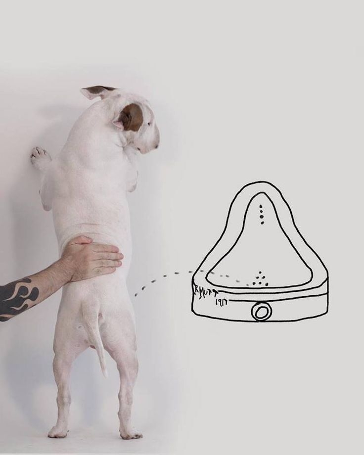
Дополнительные полезные вещи
Гамак в машину с фиксацией ремнем безопасности, нюхательный/лизательный коврики, конг, охлаждающий матрас летом, коляска для собаки с проблемами опорно-двигательного аппарата и др.
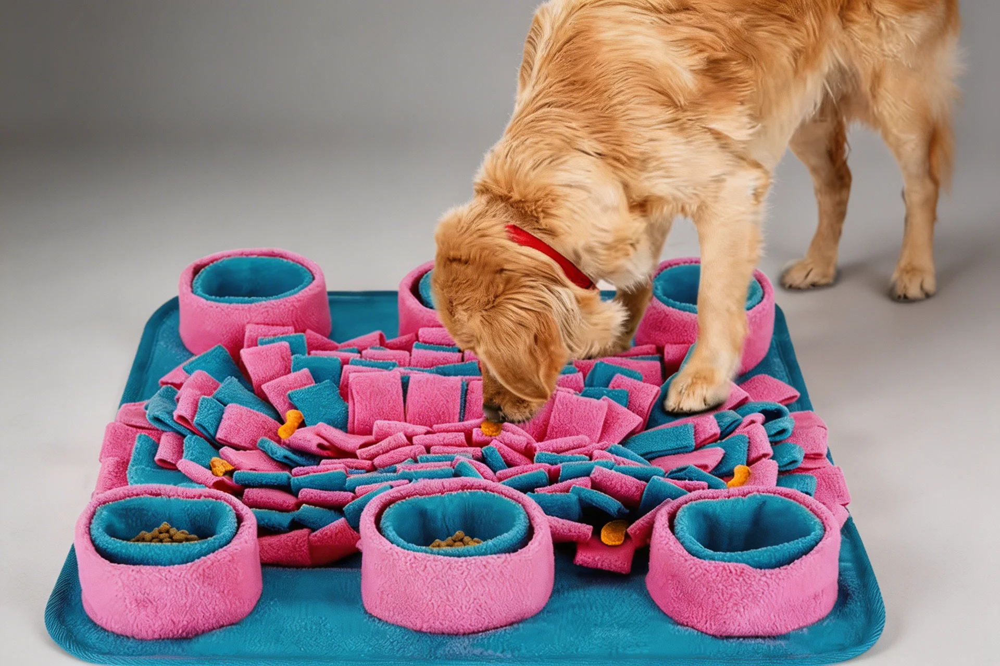
Анатомически правильная амуниция
Самая анатомически правильная шлейка - Y образная.
Анатомическую шлейку можно подобрать под особенности вашей собаки, кому-то подойдут более узкие стропы, кому-то более широкие, активным собакам и собакам с широкой грудной клеткой подойдет шлейка с тремя стропами.
Шлейка должна иметь не менее 5 точек регулировки для комфорта вашей собаки.Уделите внимание качеству креплений.
Шлейка не должна давить на плечевые суставы. Правильно подобранная анатомическая шлейка не испортит опорно‑двигательный аппарат щенка, и для хондродистрофических пород собак - только она безопасный вариант амуниции.
Миф о том, что собака на шлейке всегда тянет» связан с тем, что на ошейнике гораздо легче корректировать собаку, но в дальнейшем это скажется не только на здоровье опорно-двигательного аппарата собаки, но и станет источником хронического стресса и только усугубит "нежелательное" поведение. Для комфортной прогулки с собакой добавьте длинный поводок не менее 5 метров, позвольте вашей собаке удовлетворять видотипичные потребости - и вы увидите, насколько комфортной может быть ваша прогулка!
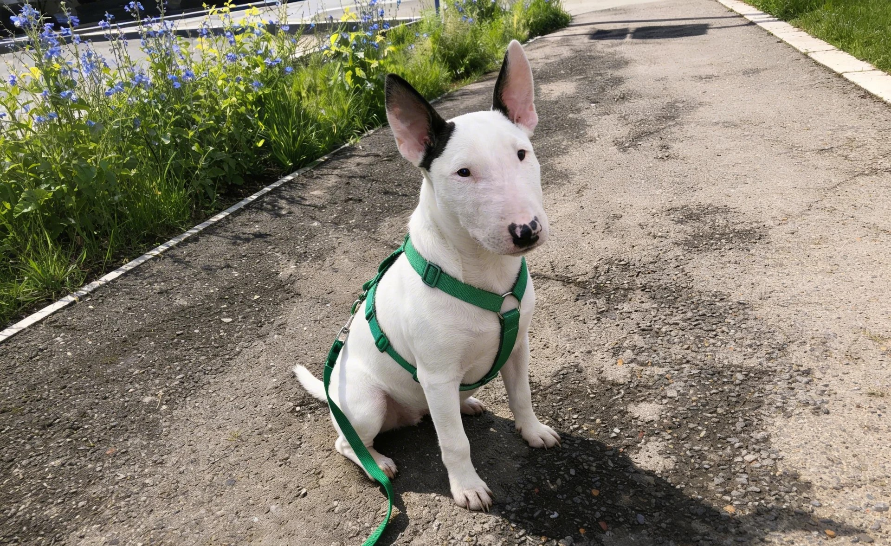
✔️ анатомически правильная шлейка ❌не анатомическая шлейка
❌не анатомическая шлейка
Аверсивная и псевдогуманная амуниция
Данные виды амуниции для собак не только негуманны, но и нерезультативны (импульсный контроль не поможет при выбросе гормонов в момент возбуждения у собаки).
Аверсивные средства амуниции: ЭШО, строгий ошейник, удавка.
К псевдогуманным (корректирующим) средствам амуниции можно отнести: халти, шлейка с передним кольцом (очень травмоопасны), поводок-перестежка и очень короткие поводки (собака не имеет возможности удовлетворить свои видотипичные потребности на прогулке). Такая амуниция очень травмоопасна и приводит к хроническому стрессу и усилению "нежелательного" поведения.
Обувь мы надеваем собаке только если она травмировала конечность и необходимо ее беречь. В остальных случаях - чтобы собака не пачкала лапы, чтобы не было скользко или соприкосновения с реагентами - обувь для собаки мы не используем. Это может привести к растяжению связок и даже разрыву мышц. Дополнительным минусом является то, что собака себя в них чувствует очень дискомфортно, усиливать возбуждение собаки на прогулке.
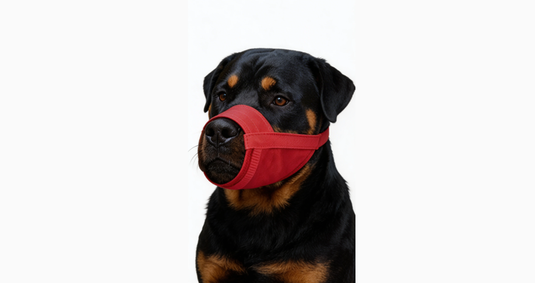
❌ опасные намордникиТканевые намордники использовать нельзя, т.к. они закрывают собаке рот и не позволяют нормально дышать и охлаждаться (собаки охлаждаются через дыхание с открытым ртом), а также не дают возможности собаке использовать в коммуникации сигналы примирения.
Одежда
Наиболее физиологичным для собаки вариантом одежды для собаки являются попоны. Правильно подобранная попона не сковывают движения собаки и не доставляет дискомфорт, в отличие от комбинезона.
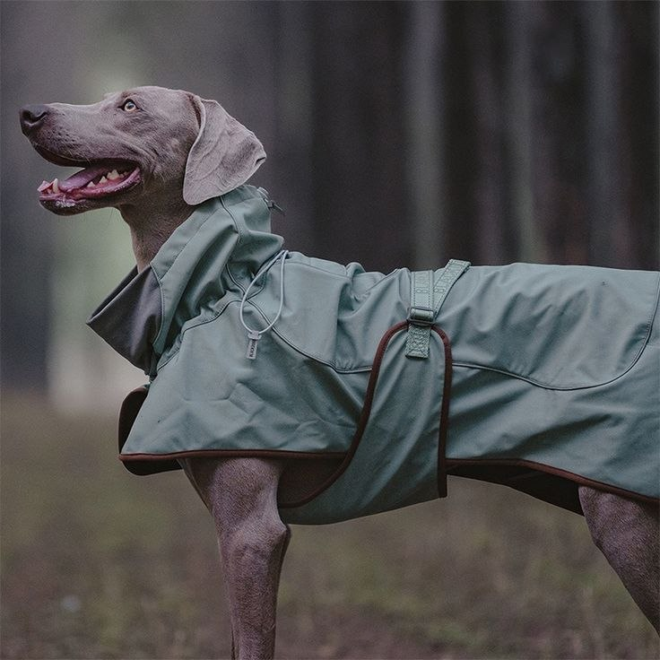
✔️ попонаДля cобак с шумофобией создали специальные попоны ThunderShort, которые оказывают очень легкое давление на собаку, что способствует выработке эндорфинов и создает ощущение безопасности у собаки.
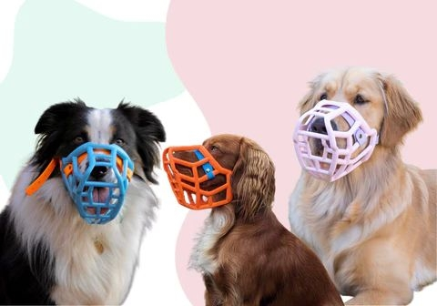
✔️ правильный намордникЕсли по определенным причинам вашей собаке нужен намордник, то он должен позволять собаке свободно дышать с открытой пастью, высунуть язык, попить воды, быть легким и не натирать. Идеальный вариант - намордник-"корзинка".
Выбор поводка
Поводок должен быть легкий, длинный и надежный. Важно, чтобы карабин был надежным, но не тяжелым и не стучал по спине собаке.
Прогулочный поводок должен быть минимум 5 метров, и составлять в среднем 5-8 метров. Для охотничьих собак - 20 (!) метров для реализации их потребностей на прогулке.
В рамках прекрасного проекта Dog Field Study специалисты замеряют при помощи кардиоприборов пульс собак в разных ситуациях. В ходе эксперимента с поводками команда выяснила, что чем длиннее и свободнее был поводок тем больше собака нюхает на прогулке.
Чем больше собака нюхает на прогулке - тем сильнее она успокаивается, замедляется пульс, и как следствие - снижение возбуждения и релаксация.
ВАЖНО: Поводок-рулетка является очень частой причиной ЧМТ маленьких собак, что зачастую влечет за собой отек мозга и гибель собаки. Также на рулетке невозможно ходить на расслабленном поводке, потому что она предполагает натяжение собаки, чтобы сделать шаг.
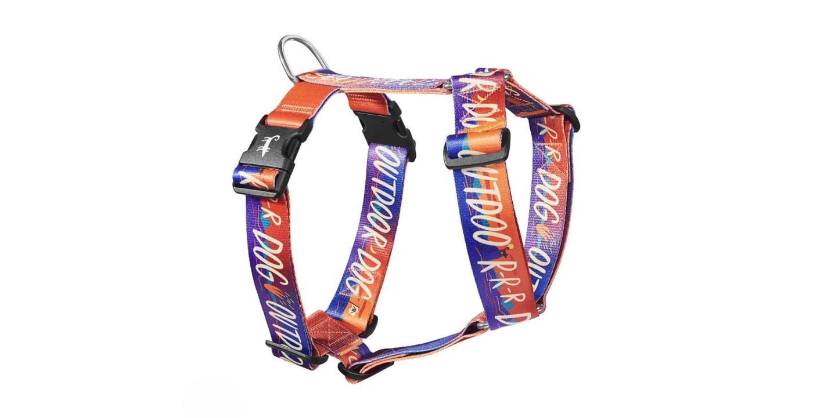
анатомическая шлейка фирмы "Шарик дог" из полиэстера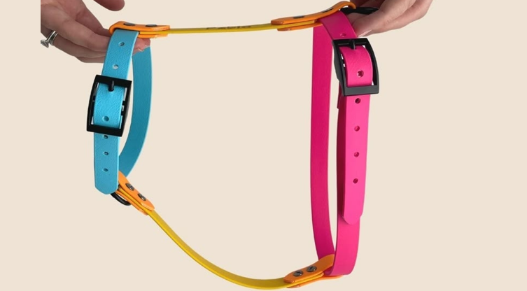
анатомическая биотановая шлейкаВыбор материала
Шлейку и поводок можно выбрать из следующих материалов:
Брезент – натуральный материал, очень прочный и достаточно тяжелый. Брезент очень часто обрабатывают химикатами для лучшей плотности, поэтому он может вызвать аллергию.
Нейлон - синтетика, которая часто используется в спортивной одежде. Не растягивается, гипоаллергенный.
Полиэстер – влагостойкий, лёгкий, недорогой материал средней прочности, но не воздухопроницаемый и не гипоаллергенный.
Биотан - хороший выбор для амуниции. Высоопрочный, но легкий, пластичный, гипоаллергенный, очень износоустойчив.
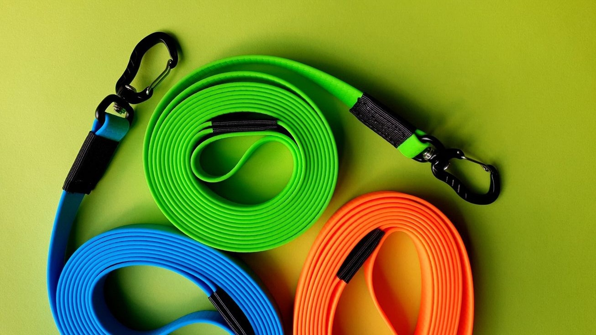
биотановый поводок обувь для собак допускается только для защиты подушечки лапы при повреждении.
обувь для собак допускается только для защиты подушечки лапы при повреждении.
Полезные ритуалы для комфортной жизни с собакой
Ритуалы являются определенной последовательностью действий в определенном контексте, которые делают повседневную жизнь предсказуемой для собаки и удобной для человека. Они помогают снизить избыточное возбуждение, превратить потенциально проблемные моменты (выход на прогулку, уход человека из дома, приход гостей, семейный ужин) в спокойные и понятные процессы.
Рассмотрим, например, такую гигиеническую процедуру как стрижка когтей. Чтобы уход за собакой был предсказуемым и безопасным, мы собираем вокруг этой процедуры небольшой ритуал. Он помогает собаке понимать, что сейчас будет, и легче перенести манипуляции.
В ритуал можно включить: определённое место, где будут происходить процедуры; специальный коврик, тихую музыку; фразу, которой вы приглашаете собаку на процедуру; лакомства для снижения стресса; реквизит, с которым собака заранее знакома и который она может обнюхать. Важно звать собаку на процедуры из ее езопасного места.
Пример ритуала стрижки когтей:
- показать когтерез и дать собаке лакомство
- дать понюхать когтерез и дать лакомство. Можно включить его в состав обогащенной среды
- поднести когтерез к лапке и дать лакомство
- щелкнуть когтерезом рядом с лапкой и дать лакомство
- взять лапку в руку и дать лакомство
- покромить консервой с закрытого когтереза (чтобы собака не поранила язык), следующим этапом - взять у собаки лапку и покормить с когтереза
- взять лапку и попробовать подстричь один коготок - дать лакомство и похвалить
Делать это постепенно с каждым коготком. Можно использовать протокол активного согласия, а при прекращении инициативы от собаки процедура заканчивается.
Честность и предсказуемость
Необходимы для того, чтобы собака чувствовала себя в безопасности и доверяла человеку. Часто игнорируется при выполнении гигиенических процедур.
Принцип обратной связи
Мы можем демонстрировать в качестве обратной связи для собаки: жесты (например, стоп сигнал), слова поощрения, которые собака отлично узнает (спасибо/молодец/все хорошо), тактильный контакт, оказание поддержки (отвести в укромное место когда собаке страшно).
Обогащенная среда и игры
Обогащение среды - это добавление стимулов, которые воздействуют на различные органы чувств собаки, расширяют ее опыт, снижают уровень стресса, новизны и вероятность деструктивного поведения, делая жизнь собаки более благополучной.
Несколько правил по организации обогащенной среды для собаки:
- Начните с нескольких предметов разных фактур, расположенных на расстоянии друг от друга. Они не должны пугать собаку, она должна иметь возможность обойти предметы, не задев их.
- В обогащенную среду можно включить мягкие/резиновые коврики, корзиночки с втулками и пластмассовыми шариками, в которых спрятаны вкусняшки.
- Постепенно усложняя задания, можно добавлять негромкие звуки, новые запахи, безопасные для собаки, включать предметы, к которым хотим собаку бережно приучить (например когтерез)
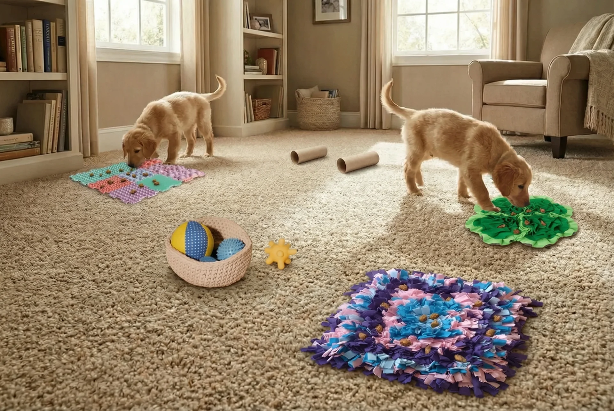
*сенсорное обогащение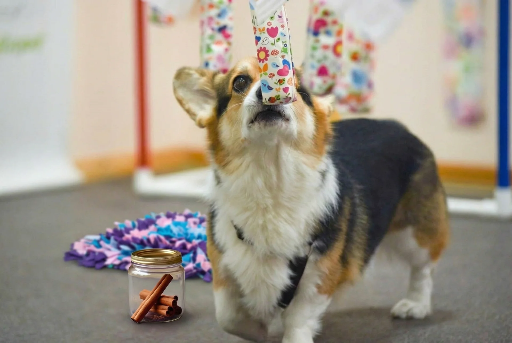
*нюхательные игрыРазвивающие игры
Развивающие игры играют очень важную роль в благополучии вашей собаки. Они позволяют собаке легально реализовывать видотипичное поведение, дают ментальную нагрузку и позволяют усилить социальный контакт со своим опекуном через совместную деятельность.
Также развивающие игры являются хорошей профилактикой когнитивной дисфункции и очень важны для пожилых собак.
Выбирайте те лакомства, которые не будут превозбуждать вашу собаку.
Примеры развивающих игр: